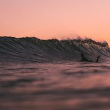

Defesa Civil prevê temporal com granizo e rajada de vento na quarta e na quinta
O aviso nº 149/2026 aponta temporal isolado com granizo e rajada entre quarta e quinta. Na quinta a instabilidade alcança todas as regiões do estado.

O aviso nº 149/2026 aponta temporal isolado com granizo e rajada entre quarta e quinta. Na quinta a instabilidade alcança todas as regiões do estado.
Dois primeiros lugares no Itapoá Surf Festival e um terceiro em Matinhos, que vale vaga no Brasileiro de Base de setembro.
Metade das vagas é para mulheres negras, com aulas ao vivo a partir de 1º de setembro. No fim, 50 negócios recebem capital semente.

Primeiro lugar na categoria principal, mais três pódios em União da Vitória. O grupo completa 20 anos em 2026.
O número é nacional. A conversa, desta vez, é aqui.
A consulta é pública e o prazo é curto. O caminho está no site do TCE.
A pauta é longa, mas dois projetos mudam a relação da prefeitura com o seu dado.

A frente fria chega com força na serra e respinga no litoral. O que esperar dos próximos dias.

Num litoral onde 1 em cada 3 turistas vem de fora, pagamento internacional não é assunto distante.

Porto Belo e Bombinhas estão na conta. Entenda como funciona esse modelo e quem responde pelo resultado.




Por que criamos um jornal que não quer dar furo: a gente corre atrás de contar melhor o que já está na boca do povo. Quem somos
Cinco maneiras de ler a mesma notícia: resumo de 30 segundos, matéria completa e três colunistas. Como funciona o Modo de Leitura